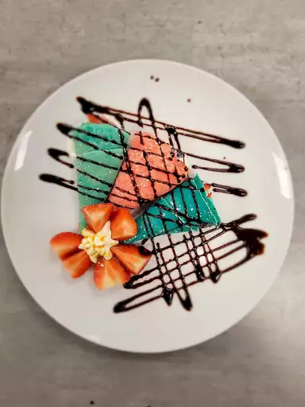

Crêpes Recipe

Make some delicious crêpes with this simple recipe! Original source of the recipe can be found here.
Ingredients
- 1 cup all-purpose flour
- 2 large eggs
- ½ cups of milk
- ½ cups of water
- ¼ teaspoons of salt
- 2 tablespoons of butter, melted
-
Optional: fruits, chocolate syrup, food dye
Directions
- Whisk flour and eggs in a large mixing bowl; gradually add in milk and water, stirring to combine. Add salt and melted butter; beat until smooth. Add a few drops of food dye if you wish to colour your crêpes.
- Heat a lightly oiled griddle or frying pan over medium-high heat. Pour or scoop the batter onto the griddle, using approximately 1/4 cup for each crêpe. Tilt the pan with a circular motion so that the batter coats the surface evenly.
- Cook until the top of the crêpe is no longer wet and the bottom has turned light brown, 1 to 2 minutes. Run a spatula around the edge of the skillet to loosen the crêpe; flip and cook until the other side has turned light brown, about 1 minute more. Serve hot, adding fruits and chocolate syrup as desired.
Navigation